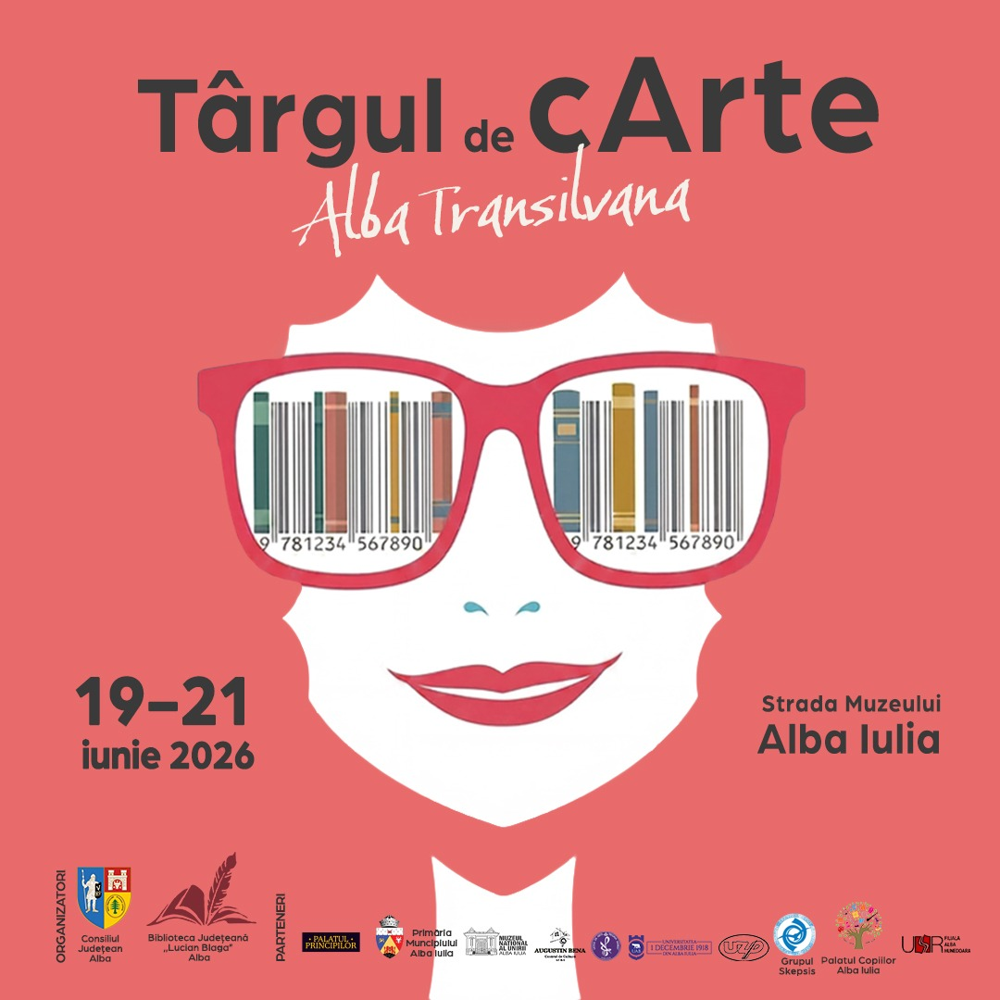

”O carte despre inteligența artificială care își păstrează valabilitatea dincolo de versiunea curentă a modelelor AI este, prin definiție, o carte despre gândire.”

Târgul de cArte
Alba Transilvana
AI NAVIGATOR
Etică și productivitate în cercetarea academică
📅 Dată: Vineri, 19 iunie 2026
🕔 Ora: 17:00
📍 Locație: Scenă / Esplanadă
🏛️ Instituție: Muzeul Național al Unirii Alba Iulia
* În caz de vreme nefavorabilă: Atrium Centurionum